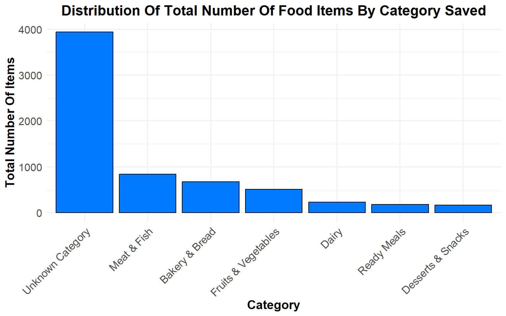

Total Number Of Food Items Saved
6549
Daily Average Number Of Food Items Saved
136
Cumulative Number Of Unique Users
416

Dashboard Information:
Welcome to the Food Waste Data Dashboard. This dashboard provides insights into the amount of food saved through our community fridge initiative, focusing on both taken and donated food.
Scan our QR code to learn more about the community fridge project.

Overview:
- Total Quantity (Kg): The total weight of food saved, measured in kilograms.
- Average Daily Quantity (Kg): The average weight of food saved per day, measured in kilograms.
- Unique Users: The cumulative number of new users participating in the initiative.
- Category: The type of food (e.g., Meat, Poultry, etc.).
- Saved: The food taken from the community fridge saving it from being discarded or wasted out.